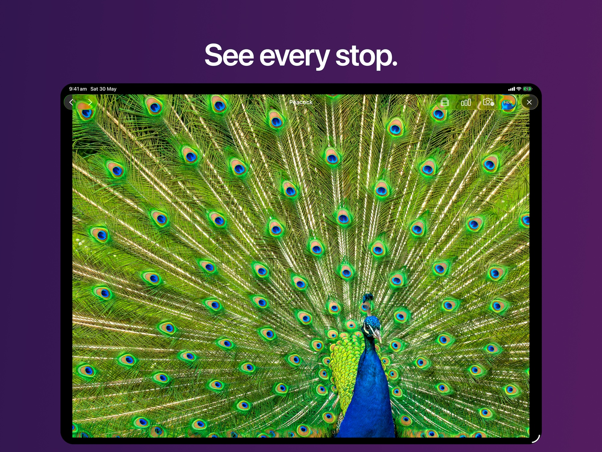
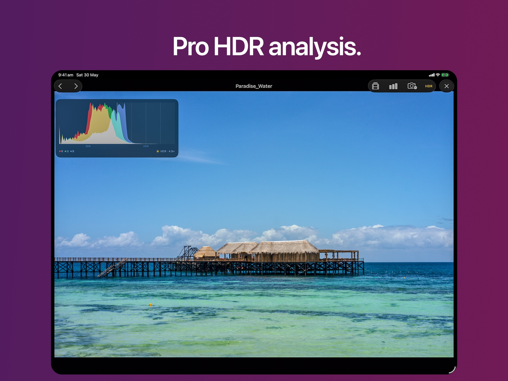
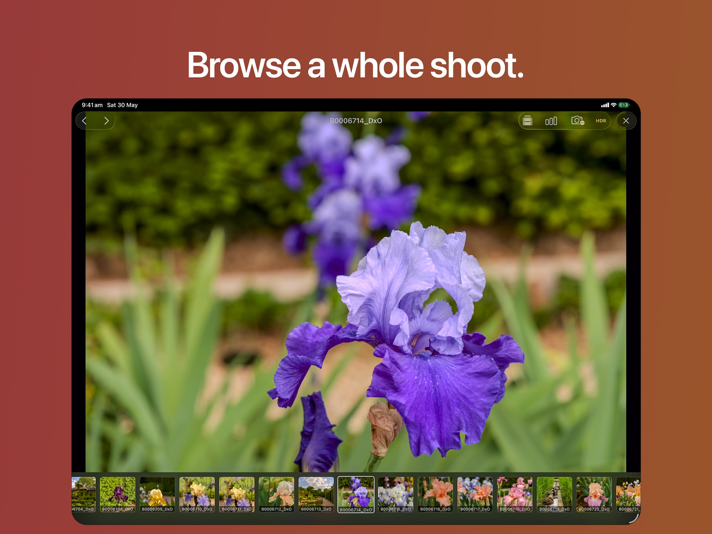
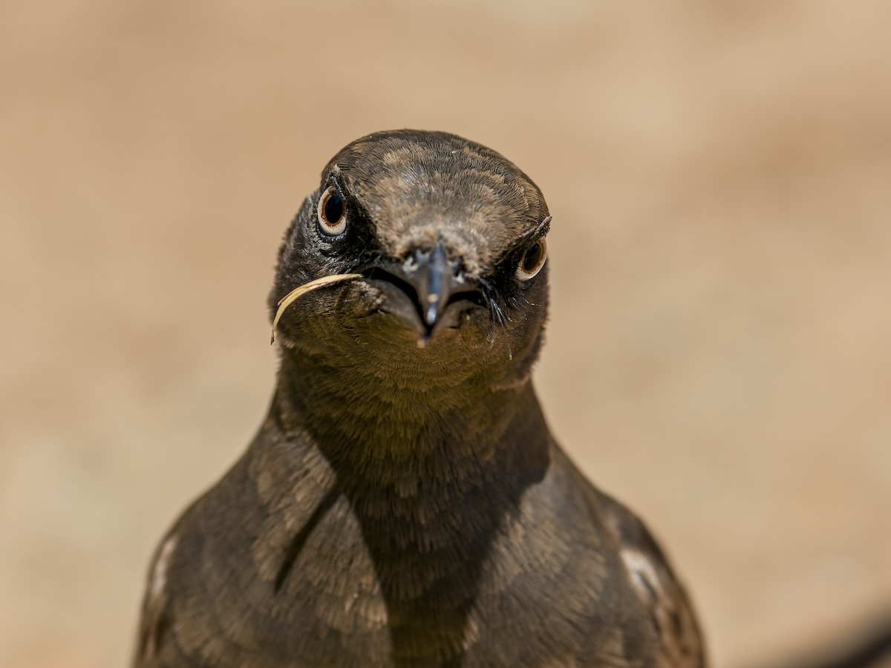
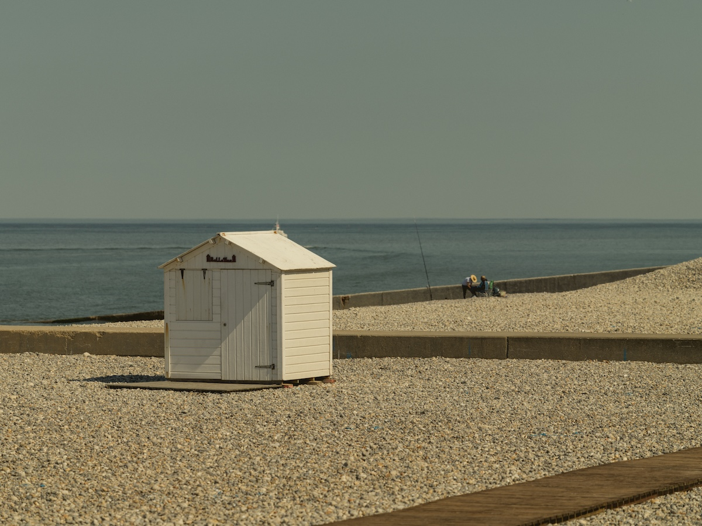
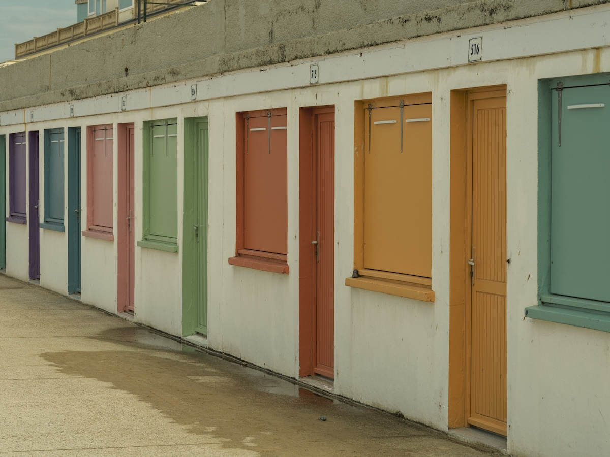
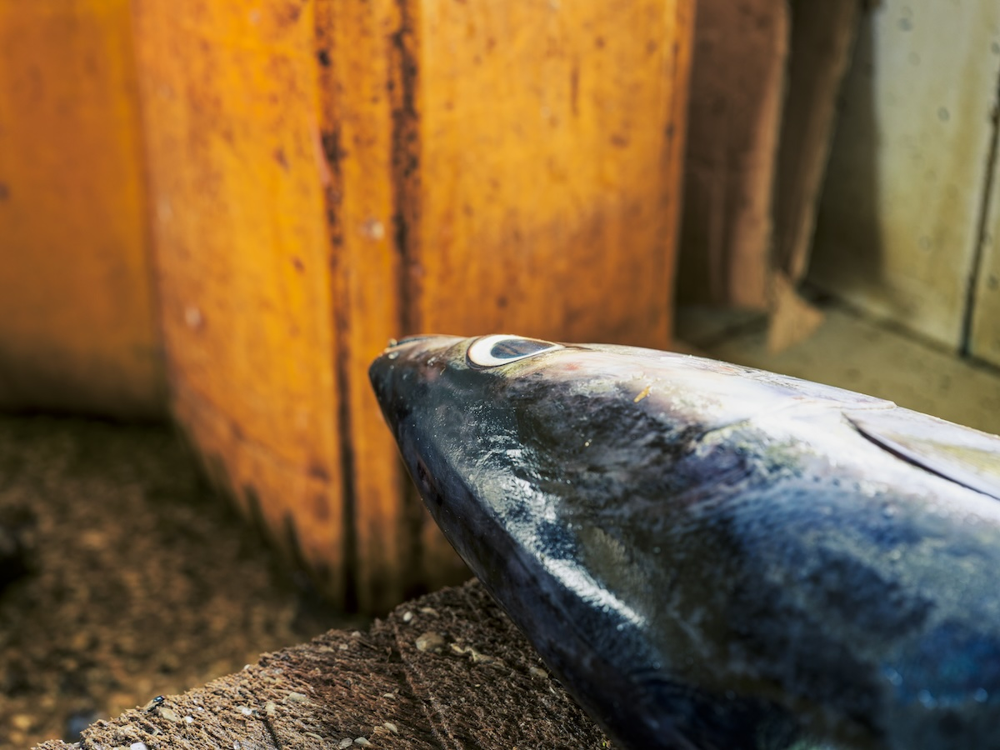
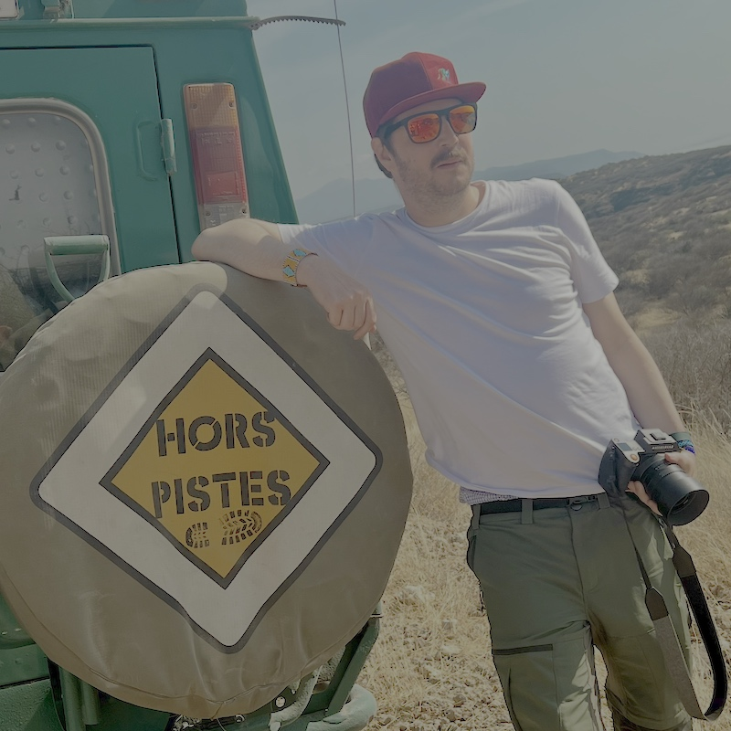

Nits
See every stop.
A fast, native HDR TIFF viewer for iPad. Built by a photographer who got tired of waiting for huge files to open.
I built Nits because I was tired of waiting fifteen seconds for a 600 MB HDR TIFF to open. So I wrote my own viewer.
See true HDR.
Nits renders gain-map and floating-point HDR TIFFs in full extended dynamic range. Highlights glow the way they did in the scene — not clipped, not compressed.

Read your image.
Live RGB histogram with an SDR/HDR split. EXIF panel showing focal length, aperture, shutter, ISO, lens, color profile, bit depth, and HDR headroom — everything you need to read what you shot.

Move through a shoot.
Filmstrip of every image in the folder. Tap a thumbnail to jump, swipe through frames, or pinch to 1:1 pixels with fluid tile rendering. No waiting. No downsampled mush.

Shot on my travels.
Every example image inside Nits — and every photo on this page — was shot by me, across France, Tanzania, Japan, and Zanzibar.





Made by a photographer.
I shoot HDR photography for fun and built Nits for myself first.
Over years of travel I've collected more than 10,000 HDR photos. Every viewer I tried either took fifteen seconds to open a single 600 MB TIFF or quietly tone-mapped them down to SDR without asking. I wanted something that opens instantly, renders in full dynamic range, and gets out of the way.
Nits is the viewer I wished existed, polished enough to share.
What's next.
Export & Share
HDR HEIC, SDR JPEG, or original file — share images straight from the viewer.
Pixel Loupe
Press and hold to magnify, and read exact RGB and HDR values under your finger.
Side-by-Side
Place two images, or one image at two exposures, next to each other to pick the keeper.
More Formats
HEIC, AVIF, and OpenEXR support coming in a future update.
Questions.
What files does Nits open?
16-bit and HDR TIFF files, including gain-map and floating-point variants. More formats (HEIC, AVIF, OpenEXR) are on the roadmap.
Why don't I see the HDR pop on this page?
Browsers and the App Store still display images in standard dynamic range, so the full HDR pop only appears when you open files in Nits on your iPad's HDR display.
Does Nits collect any data?
No. Nits collects nothing. Your files never leave your device. No account, no analytics, no tracking.
Is there a subscription?
No. Buy it once, keep it.
See every stop.
Open your HDR TIFFs the way they were meant to be seen.